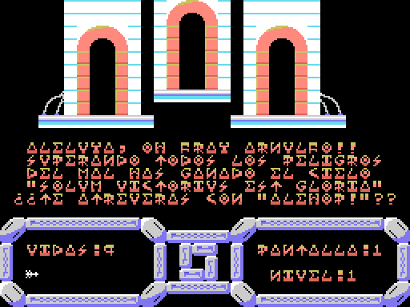
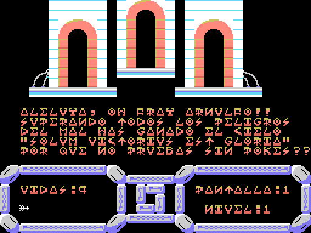

Things that turned up while taking the game apart and that, as far as we have been able to check, were not documented anywhere. Each one comes with the evidence behind it, so that anyone can verify it.
In the binary, at address 0x7F94, there is this sentence:
POR QUE NO PRUEBAS SIN POKES
("Why don't you try it without pokes.") It is not a stray message or a debug string. The routine that uses it sits at 0x8B80, and it is part of the end-of-game sequence:
FINAL_JUEGO:
ld a,(08f0dh) ; avanza a la pantalla 28, la de victoria
inc a
ld (08f0dh),a
call CARGA_MAPA ; la carga como cualquier otra pantalla
call VUELCA_BUFFER
call INIT_PANTALLA ; y la enciende
CASTIGO_TRAMPAS:
ld a,(08f1eh) ; bandera de tramposo
cp 000h
jp z,BUCLE_FINAL ; si esta limpia, final normal
ld hl,07f94h ; si no: el reproche...
ld de,019e0h ; ...encima de la ultima linea del area de juego
ld bc,00020h
call 0005chIn other words: you have cleared all 28 screens, you reach the victory screen with its «Aleluya, oh fray Arnulfo», and instead of letting you enjoy it the game writes the telling-off right on top of it. A punishment saved for the very end.
We forced the end of the game in the emulator, once with the flag clear and once with it set by hand, and compared the last line of the play area:
legitimate ending: ¿TE ATREVERAS CON "ALEHOP!"?
with the cheat: POR QUE NO PRUEBAS SIN POKESThe telling-off does not land in free space: **it replaces exactly the line where the game invites you to play *Alehop***, the company's next title. The cheater has the invitation taken away.


We searched all four of the game's binaries for any instruction that writes to 0x8F1E, in every form: ld (0x8F1E),a, ld hl,0x8F1E, ld de,…, ld bc,…. The only reference in the whole game is the read at 0x8B80. No write, anywhere.
The flag is zero on a clean tape and stays zero with the game running, so the punishment never triggers.
At first we assumed Topo had left the trap "armed and waiting". Looking at the data more carefully, the explanation is different, and quite a bit better.
The game's start-up initialises fifteen variables, one after another:
8F09 8F0A 8F0B 8F0C 8F0D 8F0E 8F11 8F12 8F13 8F14 8F17 8F18 8F19 8F1C 8F1DOne is missing. 0x8F1E is the only variable the game reads and never initialises, and it sits right next to 0x8F1C and 0x8F1D, which are initialised. That is precisely the one they skipped.
So why is it zero, then? Because the tape loads something there, and that something happens to be a zero. But it is not an initialisation: it is padding. The area 0x8F00-0x8FA0 comes filled with leftover bytes from the animation tables — you can recognise them because they alternate pattern values with colour bytes of the 0x04, 0x14, 0x34 kind — and out of those 160 bytes only three are zero. One of them, by pure chance, falls exactly on 0x8F1E.
That is: the punishment fails to fire by sheer luck. If the padding had left any other value there — and there was a 98% chance of that — the check would have come out non-zero and everybody who finished the game would see the telling-off, without having cheated at all.
So what we have here is not a clever trap but a lucky bug: they wrote the check, forgot to zero the variable, and the randomness of the padding saved them from having their own game insult every honest player.
The only published cheat for Temptations appeared in MSX Book II (Paulisoft, Brazil, 1988), page 62, in a loader signed BY MBCF/88. It says:
POKE &HB4CC,0It does nothing. In the game's binary, address 0xB4CC already holds a zero: the poke writes a zero over a zero.
The correct address is 0x84CC, which holds 0x3D — the DEC A instruction inside the routine that takes a life away:
QUITA_VIDA:
ld a,(08f12h) ; A = vidas actuales
dec a ; <-- 0x84CC. Poniendo 0x00 aqui (NOP), A no cambia
cp 0ffh
jp z,GAME_OVER
ld (08f12h),aIn the dot-matrix type used in those books, 8 and B are almost the same glyph. We compared the printed character with the 8 in "88" and the B in "BLOAD" on the same page: it is an 8 that was badly scanned or badly typeset.
Verified in the emulator. We forced the routine to run with and without the patch:
| Lives before | Lives after | |
|---|---|---|
| Without the patch | 9 | 8 |
With 0x84CC = 0x00 | 9 | 9 |
So the cheat published in 1988 had one digit wrong, and the good one is POKE &H84CC,0.
Level 4 is underwater: Fray Arnulfo turns into a fish, gravity disappears and you can swim freely. The interesting bit is how the background is done.
On the MSX video chip, the TMS9918, colour 0 is not black: it is transparent. Wherever a tile uses colour 0, what shows through is the backdrop colour, which is a single VDP register.
The game takes advantage of that. On entering level 4:
ENTRA_NIVEL4:
call EMPIEZA_NIVEL
ld a,00ch ; color 12 = verde
ld (0f3ebh),a ; en el registro de color de fondo
call 00062h ; BIOS CHGCLR: aplicalo
ld a,001h
ld (08f11h),a ; y enciende el modo flotarOne byte. With that, every transparent area of every tile goes from black to green all at once, and the whole level turns into the bottom of the sea without a single graphic having changed.
This finding came out of an observation by a veteran player: on seeing the maps we had drawn he said "the underwater ones are wrong, the background is green". He was right: our program was painting colour 0 as black. Looking for whoever touched the backdrop register turned up the ld a,00ch above.
Each screen of the game is a 512-byte block starting at 0x9000: 32 columns by 16 rows, one tile byte per cell, row by row. No compression.
The arithmetic is right there in the routine that loads them:
CARGA_MAPA:
ld a,(08f0dh) ; A = numero de pantalla
ld d,a
sla d ; SLA D con E=0 deja DE = pantalla * 512
ld e,000h
ld hl,09000h ; base de la tabla de mapas
add hl,de
ld de,07d80h ; buffer del mapa en RAM
ld bc,00200h ; 512 bytes
ldirThere are 29 blocks: the 28 playable screens (4 levels × 7) plus the victory one.
We verified this two ways. First by comparing memory: with the game stopped on screen 0, the 512 bytes at 0x9000 match byte for byte what is in VRAM. And second by drawing them: if the format were wrong we would get noise, and instead we get perfectly recognisable game screens. They are in pantallas.html.
The structure of the game does not have to be guessed at. The routine that decides what happens when a screen is finished says it:
FIN_DE_PANTALLA:
ld a,(08f0dh) ; pantalla que se acaba de terminar
cp 00dh ; 13 -> entra al nivel 3
jp z,ENTRA_NIVEL3
cp 014h ; 20 -> entra al nivel 4
jp z,ENTRA_NIVEL4
cp 01bh ; 27 -> se acabo el juego
jp z,FINAL_JUEGO
cp 006h ; 6 -> entra al nivel 2
jp z,L_8B23
jp CAMBIO_PANT_NORMAL6, 13, 20 and 27. The cuts come every seven screens: 0-6, 7-13, 14-20, 21-27.
The game does not use ASCII: it has its own character table. Space is code 0 (not 32), the digits start at 0x5C and the punctuation lives around 0x68.
Reading the texts out of the binary turns up things like PVES SERES HORRIBLES, DE NUEUO SOBRE TI or MVSICA:GOMINOLAS — that is, PUES, NUEVO and MÚSICA. They look like typos, but on screen they read perfectly.
The reason is that the codes for 'U' and 'V' draw exactly the same glyph. It makes no difference which one you type: the same letter comes out. Whoever typed the texts in used one or the other without distinction.
Along the way, the character table was confirmed by two independent routes: on one hand by drawing the glyphs, and on the other because the code itself does ld b,05Ch + add a,b to turn a number into a digit, which pins 0x5C down as the '0'.
The ending text, in full, reads:
ALELUYA, OH FRAY ARNULFO. SUPERANDO TODOS LOS PELIGROS DEL MAL HAS GANADO EL CIELO. "SOLUM VICTORIUS EST GLORIA". ¿TE ATREVERÁS CON "ALEHOP"?
(In English: "Hallelujah, oh Brother Arnulfo. Having overcome all the perils of evil you have won heaven. SOLUM VICTORIUS EST GLORIA. Will you dare take on ALEHOP?")
Alehop was another Topo Soft game. The victory screen ends up selling you the next one.
And a minor curiosity: the game's manual calls the main character Hermano Nonato, «Noni», but the text that appears on screen says Fray Arnulfo. Somewhere between design and printing, the monk changed his name.
Between 0xCA00 and 0xD000 there are 1,536 bytes that are real code: they disassemble without trouble and the routines make sense. But they never run.
It is an earlier version of some routines that stayed behind in the binary. And it is a dangerous trap for anyone disassembling: we fell for it. An automatic jump-table detector flagged them as game code, we eyeballed them and they did indeed look like correct code, and in they went. It took a later review to realise that nobody calls them.
The lesson got written down in the project: a chunk disassembling coherently is no proof that it ever runs.
At the end of the analysis there were 642 bytes left unexplained. We settled them by putting memory watchpoints on every one of them and playing a full game in the emulator — with infinite lives and pushing the monk against the right-hand edge, so as to run through all four levels up to screen 27.
PUSH and POP produces that pattern.RETs: return instructions that no path ever reaches, because the routine before them already ends with one of its own.